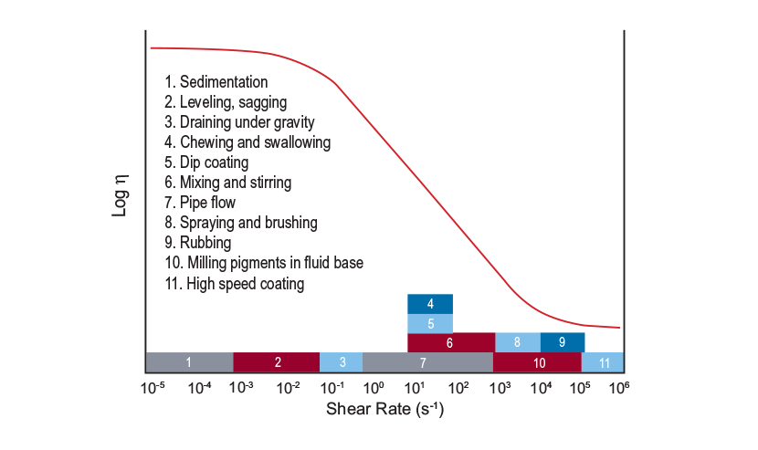

The ARES-G2 is the most advanced rotational rheometer for research and material development. It remains the only commercially available rheometer with a dedicated actuator for deformation control, Torque Rebalance Transducer (TRT), and Force Rebalance Transducer (FRT) for independent shear stress and normal stress measurements. It is recognized by the rheological community as the industry standard to which all other rheometer measurements are compared for accuracy.
Oscillation Frequency Sweep
The temperature and strain are held constant in a frequency sweep and the viscoelastic properties are monitored as the frequency is varied. The figure to the right illustrates a viscoelastic fingerprint for a linear homopolymer and shows the variation of G’ and G” as a function of frequency. As frequency is the inverse of time, the curve shows the time-dependent mechanical response, with short times (high frequency) corresponding to solid-like behavior and long times (low frequency) to liquid–like behavior. The magnitude and shape of the G’ and G” curves depend on the molecular structure. Frequency sweeps are typically run over a limited range of 0.1 to 100 rad/s. Time-temperature superposition (TTS) is often used to extend the frequency range by running a series of frequency sweeps at several temperatures. The data shown comprise a master curve constructed at a reference temperature of 190 °C for polystyrene. The original frequency range of three decades was extended to about 8 decades by using TTS.

Fluids
The data generated provides information on apparent viscosity, yield stress, shear thinning, thixotropy, and correlates to real world processes. Simple techniques like spindle viscometers can only measure a point or small part of the total curve.

Other Applications
Polymers
Adhesives & Sealants
Liquids, Paints & Coatings